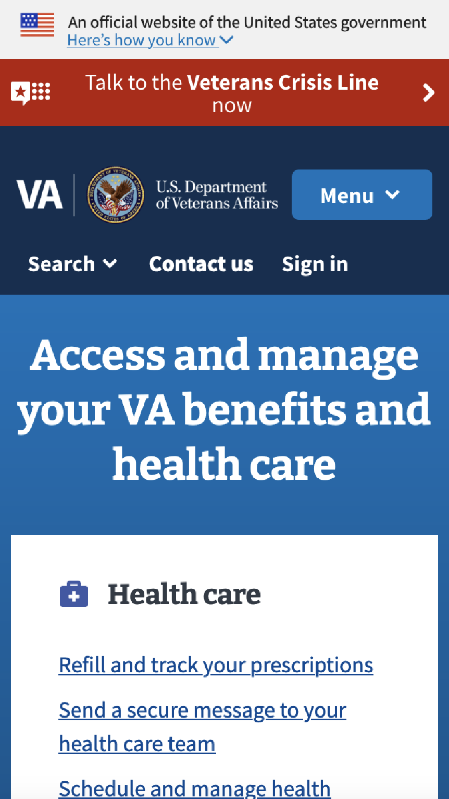
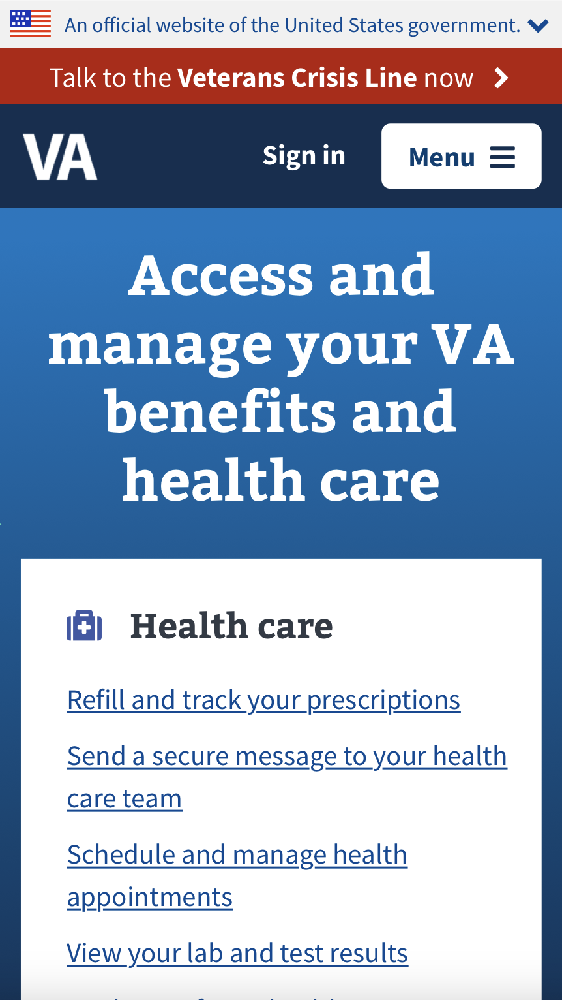
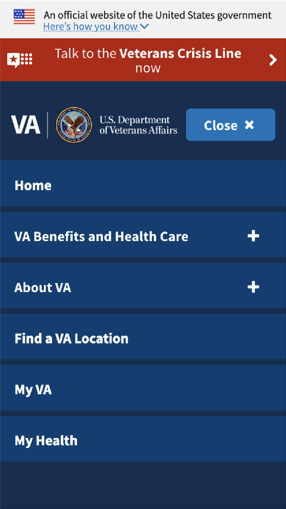
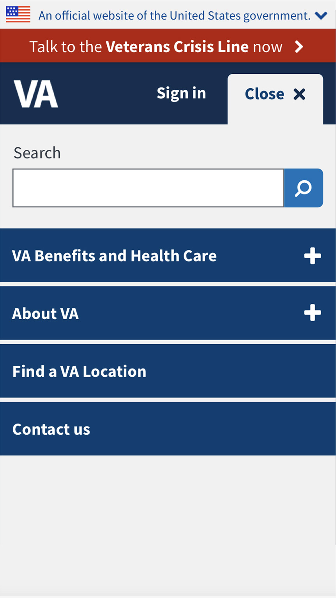
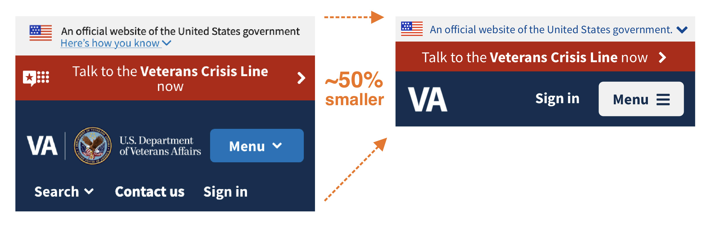

All projects
All projects
Case study: VA Mobile Header
The problem
The header for VA.gov was never optimized for mobile devices, and took up a lot of real estate on mobile screens, so much so that users could not see the H1 on page load if an alert was present.
Design process
We knew the header for VA.gov was not ideal for mobile and was ripe for improvement, however in order to know how to improve it, we had to link every change to user needs, prioritizing accessibility first. After reviewing analytics, I proposed the following changes:
- Shrink the "Official government website" banner.
- Simplify the Veteran Crisis Line component. We observed Veterans mistaking the logo as a hamburger menu.
- Minimize the VA logo by removing the VA Seal and typography, as they became illegible on small screens.
- Collapse and move search under the main menu. Our analytics indicated search was not heavily used on mobile, and giving it prominance in the main menu would increase usage.
- Remove "Contact" (a duplicative interaction) .
- Display a persistant sign in or authenticated state.
- Eliminate the redundant "Home" link in the exposed menu.
The solution
A mobile-optimized, accessibility-first header for VA.gov.
The impact
We monitored key interactions to ensure the changes did not have an negative impact, but improved the user experience on mobile:
- Search usage stays the same or improves.
- The Veteran Crisis Line did not receive fewer calls.
- Sign in stayed the same or improves.
- The main menu usage stays the same or improves.
- The call center does not receive more requests.
- Home page visits stayed the same or improved
Thankfully, all the changes made to the mobile header saw an increase in all desirable areas, and zero negative effects.
My role
This initiative was created, driven, researched, and designed by myself. Contract teams at VA made the changes and validated the results.
Before
Previous VA mobile header
After
Improved VA mobile header
Before
Previous VA mobile menu exposed
After
Improved VA mobile menu exposed
Improved, mobile-optimized, accessible header for VA.gov
All projects